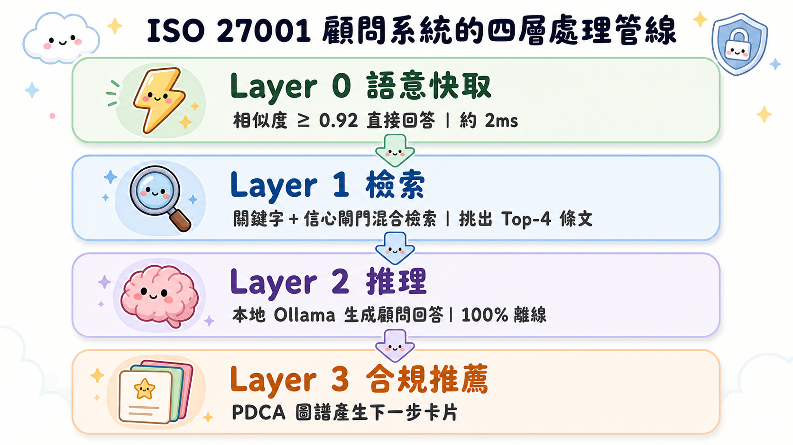

📘 使用者操作與使用手冊
歡迎使用 ISO 27001 Advisor Agent——一套 100% 可離線運行的 ISO/IEC 27001:2022 智能合規顧問系統。本手冊指引您啟動並操作系統的多種介面，解讀顧問回答，以及執行品質評估。
1. 系統啟動指南（Quick Start）
開啟終端機（Terminal），切換至專案資料夾後，依需求選擇入口：
方式一：Web UI（推薦，功能最完整）
python3 app.py系統會自動開啟瀏覽器（http://127.0.0.1:8000）。Web Advisor 支援：
- Strict Offline 模式（預設開啟）：所有推理都在本地 Ollama 完成，不會外送任何資料
- 多輪對話：自動附帶前 3 輪對話脈絡，可連續追問
- 任務模式：一般問答／文件缺口分析／稽核證據／SoA／稽核報告／30-60-90 行動計畫
- Markdown 下載：LV3 交付物（SoA、稽核報告等）可一鍵下載
- 原文抽屜與推薦卡片：每次回答附引用條文原文與 PDCA 合規推薦
方式二：CLI 互動 REPL 模式（適合連續追問）
python3 main.py啟動後在提示字元 > 輸入問題，例如：如何決定ISMS範圍？。輸入 exit 或 quit 退出。
方式三：CLI 單次查詢（適合快速查閱）
python3 main.py "最高管理階層如何展現對資安的承諾？"方式四：LV2 顧問 Agent（工具自動路由）
python3 agent.py "備份的稽核證據要準備什麼？"Agent 會自動判斷任務類型（qa / gap / evidence）並路由到對應工具；也可用 --mode 明確指定。
2. 進階參數調用（Advanced Parameters）
主程式 main.py 提供多項參數以配合您的硬體環境與模型偏好：
| 參數 | 作用 | 範例 |
|---|---|---|
--model | 指定本地 Ollama 模型（預設 gemma3:12b-16k） | --model gemma4:12b-it-qat-16k |
--top-k | 每次檢索參考的 ISO 條文數量（預設 4） | --top-k 2 |
--deep | 深度分析模式（Map-Reduce），適合跨條文複雜問題 | python3 main.py --deep "..." |
--no-cache | 停用語意快取，強制走完整 RAG 流程 | --no-cache |
--host | Ollama API 位址（預設 http://localhost:11434） | --host http://192.168.1.10:11434 |
--gemini | 強制使用雲端 Gemini API 推理（需 .env 設定金鑰） | --gemini |
--gemini-model | 指定 Gemini 模型（預設 gemini-2.5-pro） | --gemini-model gemini-3.1-flash-lite |
💡 未指定--gemini但本地 Ollama 未啟動且已設定GEMINI_API_KEY時，系統會自動切換至 Gemini 備援。Strict Offline 需求下請勿設定金鑰即可保證零外送。
3. 系統如何處理您的問題（Pipeline）
每個問題會依序經過四層處理，兼顧速度、保密與精準：
- 語意快取（Layer 0）：先比對 FAQ 快取，語意相似度 ≥ 0.92 直接回傳既有答案（約 2ms），不動用 LLM。
- 檢索（Layer 1）：關鍵字引擎（同義詞擴充＋核心術語加權）從 144 個條文節點中挑出 Top-4 依據。v4.2 新增信心閘門混合檢索（
HybridSearcher，預設 gated 模式）：關鍵字規則有把握時直接採用；沒把握時啟動語意向量搜尋＋RRF 融合＋知識圖譜擴展，讓「換句話說」的問法也能命中。 - 推理（Layer 2）：條文打包進 System Prompt（三層引用架構、閉卷約束），由本地 Ollama 生成顧問格式回答。
- 合規推薦（Layer 3）：依引用條文從 PDCA 圖譜產生 2-3 張「下一步」推薦卡片。

app.py / main.py 入口的接線排定於 v4.3——目前三個入口仍使用純關鍵字檢索。4. 解讀顧問解答（Interpreting Advisor Responses)
當您提出諮詢後，系統會輸出四個部分，對應專業稽核員的嚴謹回覆邏輯：
==================== 📖 ISO 27001 顧問解答 ====================
🎯 [諮詢問題分析]
說明您問題的核心本質與涉及的資安維度。
📖 [依據條文與控制項說明]
精確列出該問題依據的 ISO 27001 條款編號與標準內容。
引用格式一律標註為例如 [A.8.13 資訊備份]，以利翻閱 CNS 標準本。
🛠 [文件缺口與稽核證據建議]
1. 文件缺口：指引您組織內必須制定哪些「書面政策、程序書或管理規範」。
2. 稽核證據：指引您在被稽核時，要提供什麼「運行紀錄、系統設定截圖或簽核紀錄」。
⚠️ [免責與合規警示] (高風險場景)
提示此回覆不具正式認證效力，涉及高風險決策應諮詢 Lead Auditor 最終確認。
==============================================================🔍 附註：引用條文依據清單
回答末尾會列出本次推論參考的條文 ID 與檢索得分（如：- [control_8.11] 8.11 資料遮罩 (控制措施, 分數: 230.80)），可透過這些 ID 在原始條文檔 data/cht.md 中交叉比對。
5. 執行品質評估（Quality Evaluation）
檢索品質
# keyword 基準（60 題原評估集）
python3 eval/evaluation.py
# v4.2 信心閘門模式
python3 eval/evaluation.py --mode gated
# 改寫題考場（模擬真實使用者的多樣問法）
python3 eval/evaluation.py --mode gated --dataset-path data/eval_dataset_paraphrase.jsonv4.2 雙軌實測基準（top_k=4）：
| 考場 | 模式 | Hit Rate @4 | Avg Recall @4 | MRR @4 |
|---|---|---|---|---|
| 原 60 題 | keyword | 100.0% | 79.7% | 0.8597 |
| 原 60 題 | gated | 98.3% | 80.2% | 0.8764 |
| 改寫 60 題 | keyword | 71.7% | 54.2% | 0.5931 |
| 改寫 60 題 | gated | 76.7% | 58.1% | 0.6222 |
指標白話解讀：
- Hit Rate @4（檢索成功率）：前 4 個檢索結果中，是否至少命中一個預期條款。這是「答案有沒有基本可信度」的底線指標。
- Avg Recall @4（平均召回率）：預期正確條款被成功檢索出來的平均比例（部分問題有多個預期條文）。
- MRR @4（平均倒數排名）：正確條款的排序位置。第一名得 1.0、第二名得 0.5——越接近 1.0，LLM 推理時越能聚焦關鍵條文。
- 雙考場的意義：原題集是系統調校的「考古題」；改寫題集用不同措辭問同樣問題，模擬真實使用者。gated 模式在改寫考場四項指標全面領先，代表它對「不照關鍵字表說話的人」更強健。
回答品質（Faithfulness）
python3 eval/faithfulness_evaluation.py --model gemma4:e2b-mlx實測水準：Citation Faithfulness 91.8%、Content Faithfulness 98.9%（60 題，LLM-as-Judge 三層評分）。
回歸護欄
python3 -m pytest tests/test_gated_recall_regression.py -q雙資料集護欄（原題 ≥ 59/60、改寫題 ≥ 46/60）確保未來任何檢索改動不會讓品質退步；本地 Ollama 未啟動時自動 skip。
6. 常見問題（FAQ）
Q：完全離線可以用嗎？
可以。預設 Strict Offline：推理（Ollama）、檢索、快取、評估全部在本地完成。不設定 GEMINI_API_KEY 即保證零外送。
Q：需要哪些本地模型？
ollama pull 以下模型：推理用 gemma4:e2b-mlx（Web 預設）或 gemma3:12b-16k（CLI 預設）；語意快取與向量檢索用 jeffh/intfloat-multilingual-e5-large-instruct:f16。
Q：回答引用的條文編號可靠嗎？
系統採「三層引用架構」System Prompt 與閉卷約束，Content Faithfulness 實測 98.9%；但 AI 建議不具正式認證效力，高風險決策請以 Lead Auditor 意見為準。
Q：想把系統移植到其他標準（如公司內規）？
參考 docs/guides/porting_guide.html 與 scripts/build_new_advisor.py。